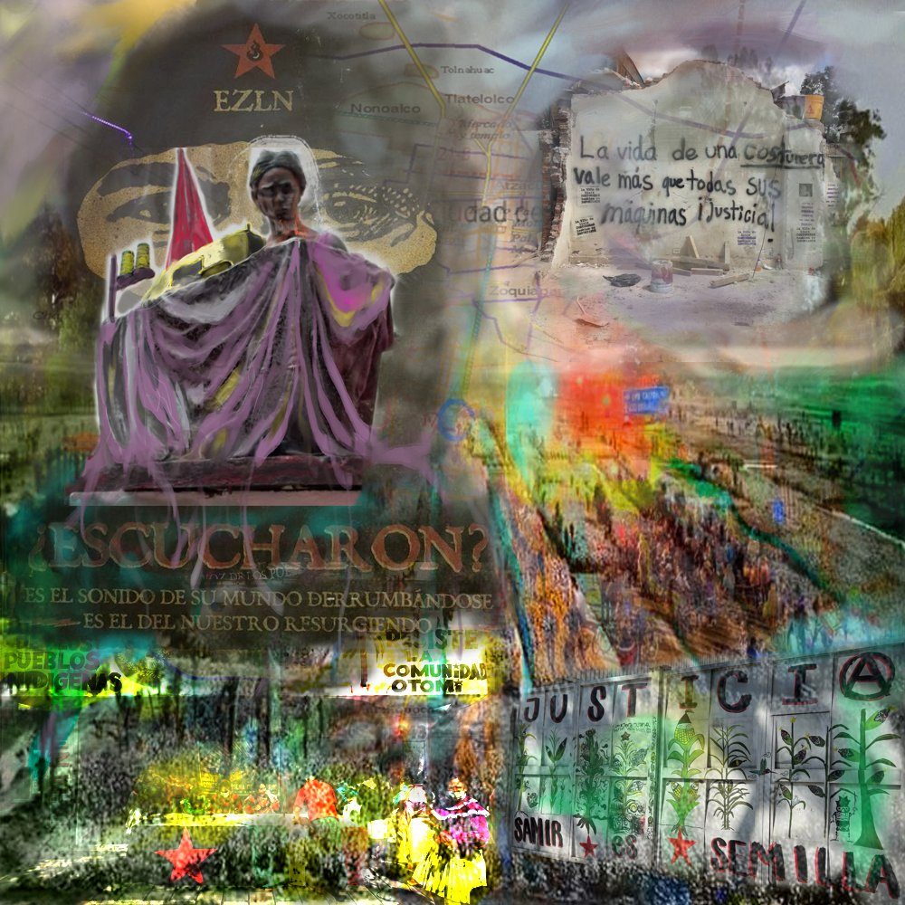
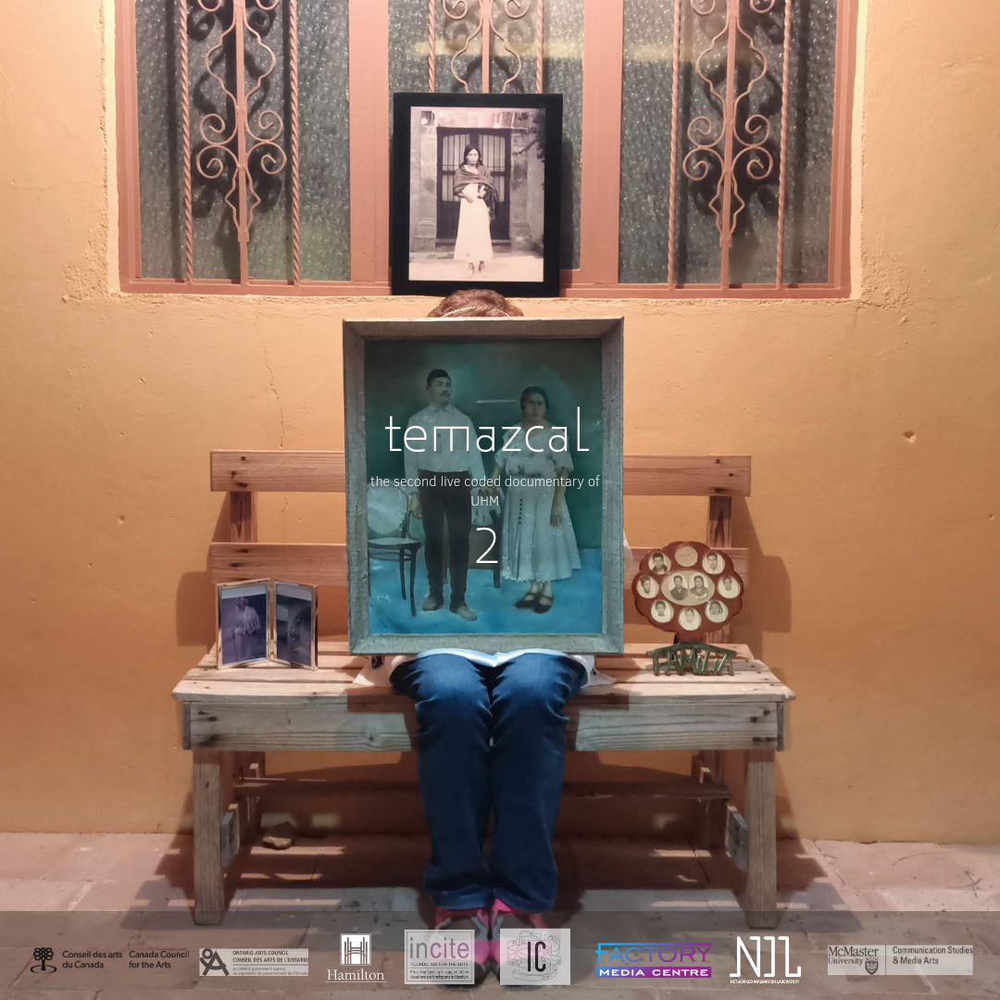
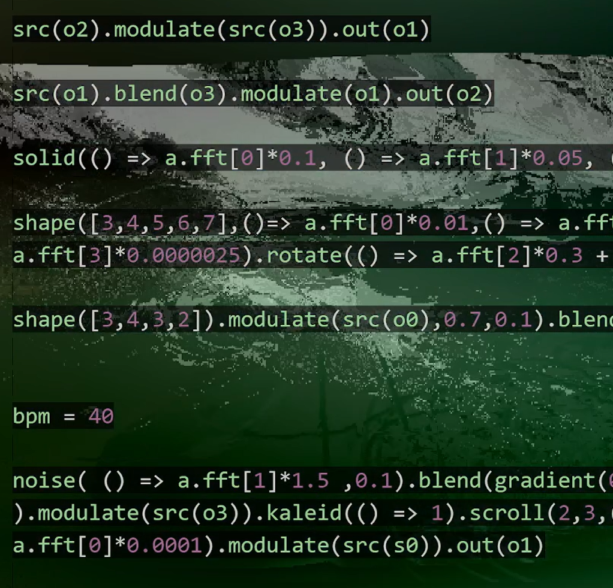

Output
About
Output
Contact
Performances
Website of the piece
Performance at Arraymusic (Toronto)
Some Software created for this work

Documentary
Factory Media Centre - NIL Live
Repo

Latest Live Coding Solo Act - KEMOM September 24, 2023, Tri-City Synthesizers Society. Recorded at the AOK Craft Beer + Arcade in Kitchener
